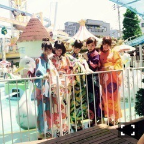
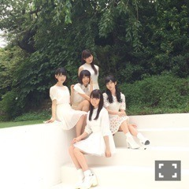
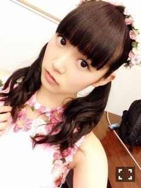

| 2015/12 30 Wed | ひめたん-0o0-その601 |
2015年 ありがとうございました。
ちょっとずつ振り返ってみようと思います
写真は見たことあるやつばかりかも
ごめんなさい( ´ ･ω･ ` )
君僕センター
初めて聞いたのは
年明けてすぐだったので
2015年はとんでもないスタートでした。
初めてのことだらけで
肩に力が入りまくりの数ヶ月でしたが(笑)
色んなことを考えるようになって
一つ成長できた気がします( ˇωˇ )
この期間にアンダーメンバーが
どーんと注目されるようになって
私だけでなくみんなにとっても
転機となったであろう11thシングル
そんな大事な期間に
センターを任されたこと
今でもありがたく思っています。
大切な楽曲というのはたくさんあるけれど
中でも君僕は格別。
後にも先にも私にとって一番の曲です。

らじらー！サンデー
乃木坂にいる間に叶えたい夢というのが
いくつかあったのですが
ラジオのレギュラー番組を持つというのも
その一つでした。
大好きなラジオの現場に
携われるようになったというのだけでも
充実幸せなのに
スタッフの皆さん、オリラジさん、
周りの人たちがあたたかくて
居心地が良くて、もう、何と言うか、
こんなことがあってよいのだろうかって
思ってしまうくらい
素敵な環境でお仕事させていただけて
本当に幸せです(´,,•ω•,,｀)
最近は番組やライブなどで
トークをする機会も増えたのですが
MC上手になったね～なんて
褒めていただくようになって
自覚はないけど......もしそうなんだとしたら
全部らじらーのおかげです(´,,•ω•,,｀)
私自身、バラエティに
苦手意識があったのですが
この番組で少しずつ色んな顔を
お届けできるようになって。
フィルターを外すことの楽しさを
教えてくれた番組でもあります
感謝してもしきれません(´,,•ω•,,｀)
じょしらく
お芝居・舞台が苦手な私の考えを
この作品が覆してくれました。
じょしらくスタッフさんと出会い、
出演者15人で助け合い、
同じチームの4人と改めて絆が深まった
短くて濃ゆい1ヶ月でした。
手寅ちゃん役は私が何も飾らず
自然に入り込めた気がしています
最初にキャスティングしていただいた
川尻さんには何かが伝わっていたのかな。
たくさん迷惑もかけてしまった現場ですが
それでもあたたかく迎えてくれて
千秋楽まで駆け抜けました
これからもじょしらくでの経験を
色んなところで生かしていけるよう
頑張ります！最後は泣いたなあ～。

広島凱旋ライブ
先ほども言った夢の一つが
夏にもまた実現してしまいました
ツアー自体も凄く楽しかったけれど
地元での初公演は何だか不思議な気分で。
今まで広島にお住いの方は
大阪か福岡まで出なきゃいけなかったから
いつか広島の皆さんに
私たちから会いに行きたい！
メンバーに広島のこと好きになってほしい！
そう思っていたのですが遂に
4年目にして叶った......。
1日目の太陽ノックが始まった時の
あの時の光景は今でもずっと忘れられません
サンプラもまた思い出の地だったので。
来年もまた帰れたらいいな。
ただいまって言えたらいいなあ
それが今のモチベーションになってます！

サンクエトワール結成
13thシングルは
アンダーWセンターを務めたことも
もちろん私にとって大きな出来事でしたが
アンダーメンバーだけでの
ユニットを結成しちゃうなんて
乃木坂では初めてことで、少し前までは
考えられなかったことだなって思うと
それだけアンダーメンバーの存在が
この一年で大きく成長したのかなあと。
そんな中でサンエト結成。
大人への近道にはMVも作っていただけて
ラジオ、グラビア、さらにはイベントと
この5人で稼働すること多かったな～
熱くて、向上心があって
キラキラしたメンバーとそばにいると
私もどんどん前向きになるのがわかります
たくさんのことを教えてくれる4人です
これからもいろんなこと
できたらいいなあ～＊

アンダーライブ
アンダーライブについては
最近長く熱く語ったばかりなのであれですが
今年を振り返る上で外せない出来事なので
少しだけお話しさせてください(｀・ω・´)
今年あったのは3rd、4th、武道館。
初日の一曲目でステージに立った時はいつも
何とも言えない感覚になります
いろんなものが込み上げてくるというか。
特に3rdなんか命は美しいなのに
涙出てきそうになって困ったもんな～(笑)
先が確約されていない、私たちの
出来次第でいつ終わってもおかしくない
と言われていたアンダーライブ。
最後に武道館でみんなで
同じ景色が見られて良かったです
確実に今までで一番のライブになりました！
握手会
初めましての方が
今までと比べても圧倒的に多かった一年！
部数も増えて去年以上に
たくさんの方と、長い時間お話できたような
気がしています。
可愛いメンバーがたくさんいる中で
私を選んで会いに来てくれて
楽しい時間を本当にありがとう(´,,•ω•,,｀)
お話のトピックも今までより
わっと増えたような気もしています。
ラジオ聞いたよ！雑誌見たよ！
テレビ観たよ！MVのあのシーン良かった！
ライブ行きました！などなど。
少しずつですが、皆さんの
目に触れられるようになってきたのかなと
実感するのはいつも握手会の時。
でも来年はもっともっと
探す必要がないくらいになるよう
頑張るね！！
これからも私にたくさんのお話を
聞かせてください。
いつもたくさんのパワーをありがとう♡
他にも、雑誌の連載が始まったり
ツインテールをやめてみたり
たくさんの変化があった一年でした。
ソニレコの皆さんともっと
仲良くなれたらいいなと思っています！
来月呼ばれるかもわからないのに。笑
Axisの広告モデルに
5年ぶりに選ばれたことも嬉しかったし
パナソニックパネルと一緒に撮った写メは
私の宝物です。
写真を撮られることに
ずっと苦手意識を持っていたのですが
グラビア撮って頂く機会が増えたことで
もっと研究したい！楽しい！って
前向きになれたし
バラエティも先ほど言った通り
楽しめるようになりました⊂( ˆωˆ )⊃
高校生でなくなって
お仕事のことだけ考えるようになった一年
今までで一番充実してた！！
次はこんなことしたいって
好奇心も少しずつ持つようになりました！
乃木坂にいる間に叶えたい夢が
まだいくつかあるのですが
それは叶った時に報告しますね
来年もたくさん報告できたらいいなあ。
今年の目標は「ポジティブ」でした！
来年の目標は「ナチュラル」です！
自然体の、ありのままの私を
もっと発信していきたいなってのと
備えることはもちろん大事だけれど
肩の力を抜くこともそろそろ
覚えたいなと思いまして......。
来年はハタチになります！
私たちの世代からは
中学生でこの世界に飛び込み
高校時代は活動と並行しながら過ごした、
青春の中心には常に
乃木坂の存在があった人ばかりです。
乃木坂が大きくなると共に
私も人間的に成長させられることが
たくさんありました( ˇωˇ )
今の環境に感謝しつつ、
グループのプラスになるような人に
なれたらいいなと思っています。
来年も頑張るぞー！
2015年私に携わってくださった
全ての皆様、お世話になりました
ありがとうございました。
2016年もどうぞよろしくお願いします！
明日の紅白歌合戦、頑張ります＼(^o^)／

(＊´・ω・＊)
コメント(1188)
2015/12/30 23:48